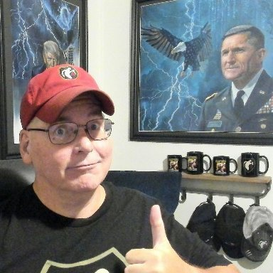
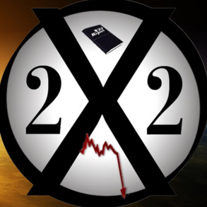
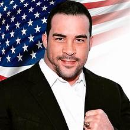
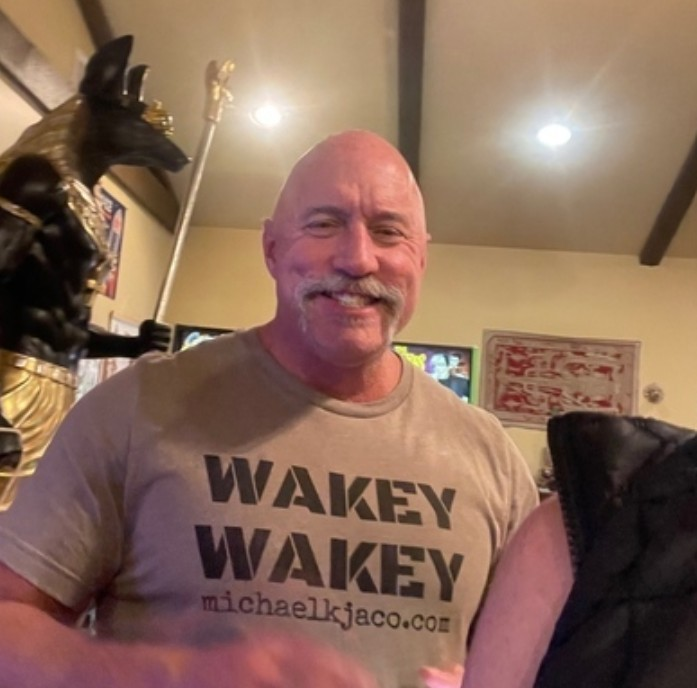
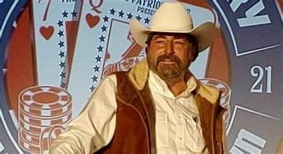
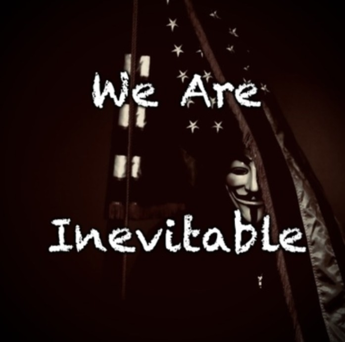
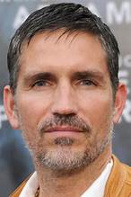

What Is the Conspiracy Industry?
It is a business. Not a movement, not a patriotic awakening, not a great unraveling of hidden truth. It is a business that sells fear and false hope to Americans who are looking for answers. It has creators, distributors, amplifiers, and mainstream figures who give it legitimacy. It has revenue streams. And it has a product that can never be delivered, because the moment the "plan" comes true, the customers stop paying.
This chapter answers five questions: What is it? Who built it? When and how did it grow? Why do people believe it? And how do you recognize it in 30 seconds?
Who Built It?
Tracy Beanz: The First to Monetize
In October 2017, an anonymous poster appeared on 4chan. Within weeks, Tracy Beanz was making YouTube videos decoding the posts and building a subscriber base around them. Ron Watkins confirmed in a Q documentary that she was the first person to monetize Q content. She created the template every grifter in this chapter copied: take anonymous posts, invent an interpretation, charge people a monthly subscription to hear it. By 2016, retirees were already complaining to ECONCHICKINTELCHICK about Beanz extracting monthly payments from them. ECON also noted that "almost all grifters are former DEMOCRATS." Beanz pioneered the business model. Everyone else copied it.
Brian Cates: The Network Builder

ECON calls Brian Cates "the father of MAGA GRIFTERS." He worked as a writer for Epoch Times while stealing intelligence analysis from credible analysts and reposting it as his own. He and Beanz admitted to ECON they were using her "as their intel source" and tried to recruit her into their cross-promotion network, which she describes as operating "kinda like the mafia." When ECON refused to join, they kept stealing her analysis. Cates told lawyers he was "too poor to sue." Together, Cates and Beanz built the infrastructure the conspiracy industry still runs on.
When and How Did It Grow?
2018-2020: The Perfect Storm
The network expanded rapidly. Cates and Beanz recruited content creators into a cross-promotion system where everyone retweeted everyone, appeared on each other's shows, and validated each other's claims. Dave Fishman pivoted X22 Report from financial doom to Q content because the audience was bigger. We The Media and Anon Alliance emerged as distribution channels on Telegram. Then COVID hit. Then the 2020 election. Millions of Americans were stuck at home, afraid, angry, and glued to their phones. The conspiracy industry had the perfect storm.
X22 Report (Dave Fishman): The Conditioning Machine

A computer technician from New York. Launched X22 Report in 2013 predicting economic collapse. Pivoted to Q content because the audience was larger. YouTube banned him. Spotify banned him. He moved to Rumble: 810,000 followers. Two episodes per day, every day. Episode 3,868 aired in March 2026. Media Bias/Fact Check rates him "strong conspiracy and pseudoscience" with "very low factual reporting." The daily format is the weapon. Repetition replaces evidence. Legitimate guests like Devin Nunes and Kash Patel appear on his show to steer his audience toward truth, but Fishman uses their credibility as validation for everything else he says.
3,868 episodes. How many predictions came true?
Zero.
We The Media / Anon Alliance / Badlands Media: The Distribution

Distribution networks function as wire services for the conspiracy world. A theory written by one person reaches hundreds of thousands within hours. We The Media and Anon Alliance aggregated content on Telegram. Badlands Media split from We The Media and became Jon Herold's own media company with a daily show schedule, multiple hosts, and full production infrastructure on Rumble. When someone shares a conspiracy theory and it feels organic, like they discovered something, in reality it was manufactured by a creator and pushed through this infrastructure. Nothing about it is accidental.
2021: The Theory Creators Appear
Jon Herold published Devolution Part 1 in July 2021 (Chapter 6). Derek Johnson appeared months later, took Herold's framework, combined it with the Law of War Manual, and built his own brand (Chapter 7). The industry now had original content, distribution networks, and a growing army of amplifiers ready to repackage it all for their own audiences.
Why Do People Believe It?
The Cross-Promotion Illusion
When Scott McKay says mass arrests are coming, and Nino says it too, and Charlie Ward says it too, and X22 says it too, the audience believes "multiple sources" are confirming it. In reality, it is the same fiction repeated by people who all profit from the same lie. They appear on each other's shows, retweet each other's posts, and validate each other's claims. It looks like independent confirmation. It is a coordinated echo chamber.
David "Nino" Rodriguez: Pay-Per-View Fiction

Former professional heavyweight boxer (37-2 record, WBC #10). No intelligence background, no military experience, no government service. Charges money per view to hear predictions that never come true. When predictions fail, he moves goalposts and charges for the next stream. Selling tickets to a show where nothing happens.
Scott McKay ("Patriot Streetfighter"): The Violent One

Former bodybuilder who declared war on healthcare providers at a ReAwaken America tour stop. When COVID hit his own rally, he blamed a "deep state toxin attack." When his father died from a COVID-related stroke, he vowed "massive retribution" and turned his father's death into content. His February 2026 show: "Natural Weapons System To Defeat Nano Technology Of Transhumanism."
Charlie Ward: The Financial Fraud

Not American. British, living in Spain. Got his "Dr." title from a parking ticket. Promotes NESARA/GESARA, a financial fraud scheme promising a currency reset that has been "imminent" for 25 years. The BBC investigated it: "Financial Fantasy Ruining Lives." He first rose to fame promoting Gregory Hallett as the new King of England, whom he later admitted he knew was a fraud. He used the story to grow his channel, then moved on.
Dr. Jan Halper-Hayes: The Diploma Mill
PhD from Columbia Pacific University, an unaccredited school shut down by court order in 2000. California called it "a consumer fraud, a complete scam." Failed 88 state regulations. Her LinkedIn lists enrollment starting 1976; the school was not founded until 1978. Claims doctoral work under Carl Rogers at Fordham, but Rogers was in La Jolla, California. Went on national television claiming Space Force has election fraud evidence. Became a regular with Derek Johnson, giving his stolen theories academic credibility. The Ghost investigated her credentials.
Michael Jaco: Stolen Valor

Claims former Navy SEAL Team Six with "intuitive abilities" including remote viewing. Claims a past self was a direct disciple of Jesus. Trained with Bill Wood, exposed as lying about being a SEAL and wanted by U.S. Marshals as a sex offender. Told his audience Obama was arrested. Obama was not arrested.
Juan O'Savin (Wayne Ronald Willott): The Fake Identity

Insurance investigator from Seattle. Career: workers' compensation surveillance. Alias plays on the number "107." Followers believe he is JFK Jr., who died in 1999. Willott has never denied it because the mystery drives engagement. His publisher identified his book as "a transcript of speeches by Wayne Willott, using his nom de plume Juan O Savin."
SG Anon: Anonymity as Product

Anonymous. Claims he tried to join the military but had a medical condition. Met an unnamed "mentor" who asked him to share information. That is his entire credential. The anonymity is the product. Nobody can verify his claims by design.
InTheMatrixxx (Jeff): The Decoder Dependency

Built one of the largest Q decoder followings. His model: read anonymous 8chan posts, invent interpretations, charge monthly Patreon subscriptions. Followers cannot understand the "truth" without Jeff translating it. Dependency by design.
Kerry Cassidy: The Pre-Existing Pipeline
Has run Project Camelot since before Q existed, covering UFOs and alien disclosure. Her integration shows how the industry absorbs existing audiences. People who followed Cassidy for UFOs were introduced to devolution through cross-promotion. The industry does not care what you believe, as long as you stay consuming content.
Prolotario (formerly Ariel): The Bridge Account
@Prolotario1 on X, 473,000 followers. Bio: "Non-(Pay)triot" with a Patreon link. Bridge accounts take content from Telegram and Rumble and push it into mainstream feeds. One repost introduces content to hundreds of thousands who would never seek it out.
Roseanne Barr: Celebrity Amplification
One of America's most beloved comedians turned conspiracy amplifier. Lost her ABC sitcom over racist tweets in 2018. Instead of stepping back, she went deeper. Recorded videos with Q influencer Cirsten Weldon, who later died after refusing medical treatment for COVID. Pushed Derek Johnson hard. Built ties with Juan O'Savin. Her celebrity name recognition gives fringe content mainstream visibility that no Telegram channel can match.
Jim Caviezel: Religious Authority as Weapon

Played Jesus Christ in "The Passion of the Christ." Used that role's cultural weight to promote adrenochrome conspiracy theories at the Health and Freedom Conference in 2021. When the man who played Christ validates a conspiracy figure, the audience does not process it as celebrity endorsement. They process it as religious confirmation. No Telegram channel can replicate that authority.
The mainstream on-ramp, including Candace Owens, Tucker Carlson, and Megyn Kelly, is covered in detail in Chapter 12.
Where Does the Money Go?
Predict
Mass arrests, tribunals, currency reset. Always imminent. Never falsifiable.
Charge
Substack, pay-per-view, merch, speaking tours, Patreon, Rumble.
Fail
Date passes. Nothing happens.
Blame
"Deep State pushed it back." "Trust the plan."
Repeat
New prediction. New charge. The cycle never ends because ending it ends the revenue.
How to Recognize It in 30 Seconds
- Are they charging money? Real intelligence professionals do not sell classified information on Substack.
- Are they anonymous? No accountability means no credibility.
- Have their predictions come true? Check results, not promises.
- Do they block questioners? Credible researchers welcome scrutiny.
- Do they cross-promote with this list? If your favorite "patriot" appears on these shows, they are in the network.
Sources: Their Own Words and Platforms
- X22 Report on Rumble (810K followers, direct source)
- Patriot Streetfighter on Rumble (237K followers, direct source)
- Jon Herold on Truth Social (180K followers, direct source)
- Derek Johnson on Truth Social (110K followers, direct source)
- Patel Patriot's Devolution Series (Substack, direct source)
Conservative Sources Calling Them Out
- Ben Shapiro calls Candace Owens "evil" (The Ben Shapiro Show / JFeed)
- Hollywood Reporter: Owens' "Bride of Charlie" series targeting Kirk's widow
- American Jewish Committee: Why Owens' Rhetoric Poses Real Risks
- The Forward: Right-wing extremists to watch in 2026